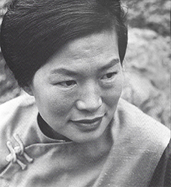

The Artistry of Anna Wu Weakland
In Memoriam...

Anna Wu Weakland, a noted artist whose work evolved from traditional Chinese form in ink and water color to monotype and tapestry over a 50-year career, and whose creative energy and independent, self-assured spirit fostered diverse friendships with iconic figures such as anthropologist Margaret Mead, Chinese master painter Zhang Daqian, and psychologist/psychedelic drug advocate Timothy Leary, died from renal failure on February 8, 2014 in her adopted hometown of Palo Alto, CA. She was 90 years old.
A native of Shanghai, China, Weakland graduated from the University of Shanghai and ran her own advertising agency for several years before coming to the U.S. in 1947 to live in New York and earn a master's degree in Sociology at Columbia University.
At Columbia, she met future husband John H. Weakland, a brilliant student who would later achieve renown as one of the originators of family therapy. According to family lore, Miss Wu flashed her large apple jade ring and John Weakland was smitten. He took an opportunity to conduct a cultural interview with Miss Wu for a class project, and their future paths were soon linked. As a young couple their academic mentors who remained good friends with the Weaklands long after Mead and Bateson divorced in 1950.
Although John was concerned that his strict West Virginian father might disapprove of his son's prospective mixed marriage, his worries proved unfounded - it took Anna Wu no more than a few minutes to charm and win over the old gentleman when they were first introduced.
Shortly after received her master's degree in 1948, Weakland was living at the International House when she was introduced to Chinese scholar and master painter Wang Yachen, who was in New York to curate an exhibit of 20th century Chinese paintings at the Metropolitan Museum of Art. Wang was delighted by the accomplished young woman and immediately engaged her as his interpreter for the duration of his New York stay. This chance meeting proved a major turning point- Weakland's interest in Chinese painting grew and quickly became a passion when Wang Yachen became her mentor and her talent began to emerge under his guidance.
In 1953, Gregory Bateson persuaded the Weaklands to relocate to Palo Alto, CA so that John could join him in a psychology research project at the V.A. Hospital. (The Bateson Project, as it later became known, attracted many visiting academics, including then-unknown Harvard lecturer Timothy Leary.)
While her husband was engaged in ground-breaking systematic communications and psychotherapy research with the Bateson Project, Anna devoted her energy to studying Western art at Stanford University. This cross-fertilization of East and West eventually led to the development of her unique style. As the San Francisco Chronicle Art Critic, Alfred Frankenstein later observed, "She uses Oriental inks, oriental papers, and Oriental brushmanship, plus a Western boldness of stroke and vigor in attack. She retains some of the traditional Chinese forms - rocks, plums, gourds - and sees, or brings us to see, Yosemite as a Chinese mountain valley. But she has [also] experienced much abstract expressionist painting... [and] goes over into the abstract dance of form with equal parts of virtuosity and power."
Following the birth of her three children between 1958 and 1960, Weakland's creative energy reached its zenith, with fifteen one-woman shows in seven years. In contrast with her diminutive size, Weakland created large and sometimes monumental scrolls, and the quality of her artwork during this period was recognized both domestically (with exhibits at the De Young Museum, Stanford University Art Gallery, Seattle Art Museum, and the Downtown Gallery, New York) and internationally (exhibits at the Ashmolean Museum, Oxford, England, the Sale International, Palacio de Bella Artes, Mexico City, the Fine Arts Gallery at the University of British Columbia, and the Chatham Gallery, Hong Kong).
By the end of the 60's, Weakland felt that the continual exhibition process was taking up a disproportionate amount of her time and energy, and embarked upon an extensive period of travel and discovery to recharge her creativity. In the 70's, she traveled throughout the world, often studying with other artists and scholars. It was in this period that she befriended and became a student of one of the greatest Chinese masters of the 20th century, Zhang Daqian. Although not a household name in the West, in 2011 Zhang Daqian supplanted Picasso to become #1 in Artprice's global artist rankings by auction revenue (with $550 million in sales compared to $325 million for Warhol and $315 million for Picsso). Zhang Daqian's fondness for his student is evidenced by the artwork that he dedicated to Weakland, including an elegant black ink calligraphy advising her to "follow her own path to success".
In 1978, Weakland was invited by Canadian Pacific Air to lead one of the first tours to China. This led to fifteen-plus years of creating and leading unique art and scenery-driven tours to her homeland.
In the mid-80's, Weakland began the study of monotype, experimenting with different media and techniques. After travel to Japan and visits with several printers and paper-makers, Weakland ushered in a new phase in her career with the show, "Works on Paper" at Stanford Museum of Art in 1988 (now the Cantor Center for visual arts), which featured monotypes and collagraphs with dimensional surfaces.
Always eager to explore and learn, in 1989 Weakland traveled to Zhejiang Academy of Arts in Hangzhou, China to exchange ideas with professors and students in the painting and printmaking departments. After running into young weavers working on contemporary tapestries, she was encouraged to develop some of her monotype themes into large-scale tapestries. The resulting pieces, designed by Weakland using paper models and woven by students, use cord, twine, and rope of hemp, palm, bamboo, cotton, linen, silk, and wool in bold, textured and dimensional art tapestries, "raising a craft to the level of art," according to John D. LaPlante, professor of Asian Art History at Stanford.
Weakland was dedicated to her adopted hometown, Palo Alto, tirelessly demonstrating Chinese painting in the local school system and for many civic organizations. She also taught art classes at Stanford and for more than 40 years taught group lessons at her studio that were open to the public for a nominal fee (less than the cost of the paint, rice paper, and other materials that she supplied).
In addition to her devotion to art, travel, and family, Weakland was also a competitive A-ladder tennis player at Foothill Tennis & Swim Club, where she once played a match against a young Condoleeza Rice.
Weakland was recognized by "Who's Who of American Women" and was honored by Palo Alto's Avenidas "Lifetime of Achievent" in 1996.
She was preceded in death by her husband, John, in 1995. She is survived by her three children, Alan, of San Marino, CA, Lewis of Palo Alto, and Joan of Ames, IA, a daughter and son-in-law (Donna and Gianfranco), and two grandchildren (Devin and Tyler).
Chronology
-
1924
Born in Shanghai, China.
-
1943
B.A. University of Shanghai
-
1943-45
Worked in two leading advertising agencies in Shanghai.
-
1945-46
Opened her own advertising agency, hence, became the first woman in advertising business in China
-
1947
Came to the United States for graduate work.
-
1948
M.A. Columbia University, New York.
-
1949-51
Studied Chinese painting under Professor Wang Yachen.
-
1950
Married John H. Weakland, a fellow student at Columbia University.
Trip to Europe
-
1951-52
Taught Chinese painting at China Institute, New York.
-
1953
Became a United States citizen.
Moved to California
-
1953-54
Studied Western painting, Stanford University.
Trip to Mexico
-
1953-60
Group exhibitions:
Hunter College, New York. - 1953
Stanford University - 1957
Mills College, California - 1958
Gump's Gallery, San Francisco. - 1960
-
1957
Trip to Far East. Visited many established Chinese and Japanese artists in their studio.
-
1958
Birth of Alan, her first son..
-
1959
Birth of second son, Lewis.
Solo exhibition:
De Young Museum, San Francisco
Villa Montalvo, Saratoga, California. -
1960
Birth of daughter, Joan.
Solo exhibition:
Hansen Galleries, San Francisco.
La Jolla Art Museum, La Jolla, California. -
1961-62
"Five Thoughts on Seeing", San Francisco Museum of Modern Art
Solo exhibition:
Pasadena Museum, Pasadena, California.
Lanyon Gallery, Palo Alto, California. -
1963-65
Trip to Orient, lived 6 months in Hong Kong
Solo exhibition:
Chatham Gallery, Hong Kong
Esther Bear Gallery, Santa Barbara
Seattle Art Museum, Seattle, Washington
Ashmolean Museum, Oxford, England
Stanford University Art GalleryTaught Chinese painting at Villa Montavo, Saratoga, California.
-
1966
Solo exhibition:
Sale International/Palacio De Bellas Artes, Mexico City, Mexico
Fine Arts Gallery, University of British Columbia, Vancouver, Canada -
1967
Solo exhibition:
Downtown Gallery, New York
Greater Victoria Art Museum, Victoria, CanadaTrip to Scandinavia, visited arts and crafts centers.
-
1969-70
Solo exhibition:
Wm. Sawyer Gallery, San Francisco
Los Robles Gallery, Palo Alto, CaliforniaDesigned wine label "Chez Cray" for wine maker and dear friend, Dr. G. Cameron Cray
-
1971-72
Solo exhibition:
Heritage Gallery, Los Angeles.
I. Magnin, Palo Alto, California.With husband, John, joined wine connoisseur and dealer George Victoire.
-
1973-75
Solo exhibition:
Wells Fargo Bank, Main Branch, San Francisco. -1973
Erickson Gallery, Palo Alto, California. -1974
The Main Library, Palo Alto, California. -1975Joined Champan College's Center for International studies to visit Syria, Egypt, Turkey, Yugoslavia, Greece, Israel, and Soviet Union.
-
1976
Solo exhibition: Macy's, Palo Alto.
Summer trip with family to the frontier territory, Alaska.
-
1977
Solo exhibition: Palo Alto Medical Foundation, Palo Alto, California.
Trip to South American countries- highlights of the trip were the view of the mighty Iguassu Falls and the "lost city" of the Incas, Machu Picchu.
-
1978
At the invitation of C P Air, Canada, led a group of personal friends to homeland China where she left thirty years ago.
-
1979
Received Friends of the Library Award, Palo Alto; chosen "Artist of the Year".
Summer - as a co-leader, led fifty California school teachers to study China's educational system in Northern China.
Fall - visited China's countryside, Mao Ze Tong's birth place, southeastern region's Chendu, Yunnan.
At Stone Forest, first time encounters with China's Miao people. -
1980
Solo exhibition: Stanford Faculty Club, Stanford University.
Visited Confucious's home, Qufu; climbed one of China's sacred mountains, Taishan.
-
1981
Solo exhibition: Stanford Faculty Club, Stanford University.
Five days sailing on Yangtze river - took a vesel with eight hundred fellow Chinese passengers.
-
1982
Solo exhibition: Tresider Union Gallery, Stanford University.
Spring - participated in Stanford Alumni's study program/trip to Indonesia and the islands in that region.
Summer - visited Azores and Madeirs islands, Portugal.
Fall - with daughter, Joan, climbed Mt. Huangshan in southern Anhui province, China which inspired Chinese poets and painters over centuries. -
1983
Solo exhibition: Young-Sharin Gallery, Menlo Park, California.
Spring - visited India, Sri Lanka, and Nepal.
Fall - With son Alan, travelled China's Grand Canal, the largest man-made waterway in the world, to witness the life and sights of the rural villages. -
1984
Solo exhibition: Palo Alto Medical Foundation, Palo Alto, California.
Spring - took a trip to Great Barrier Reef, Australia, New Zealand, and Tahiti.
Summer in Switzerland and Milan - to view the important contemporary art works.
Fall - travelled to Inner Mongolia, Dunhuang caves of Buddhist art fame and along the old Silk Road, China. -
1985
Became actively interested in Monotype; started to experiment with different media in her studio.
Fall - with husband John, took Chinas newest and most modern cruise ship sailing the Yangtze river to view the three magnificent gorges.
Also, a visit to colorful minority group Dai people in remote Xishuangbanna. -
1986
Prints and paper making in Japan. Visited many printers in their studios.
-
1987
Spring visit to the Mayan ruins, Yucatan Peninsula, Mexico.
Summer - sketching in Southern Italy.
Fall - attended conference on "Four famous Monks/Painters in late Ming and early Ching" at Shanghai Art Museum, China.
Also, visited many established painters in Shanghai. -
1988
Solo exhibition: Stanford University Museum of Art
-
1989-90
Solo exhibition:
Hewlett-Packard Company Art Gallery, Palo Alto, California.
Sacred Heart Art Corridor, Menlo Park, California.
Gump's Art Gallery, San Francisco, California.
Tercera Gallery, Los Gatos, California.
Mixed Media
Artist Statement - February, 1988
When Pat Maveety asked me to make a personal statement about my work, my immediate reaction was like a rebellious child: "Why should I use my words when my works speak for themselves?" But his gentle persuasion won out.
I have been a painter for thirty years, I love painting on very absorbent rice paper, using rich fresh ground Chinese ink (made by rubbing a charcoal stick on a stone) and brushes made from hair of sheep, sable, horse, camel, wild cat, or boar. When I put down spontaneous lines, dots, or dribbles, the brush strokes are alive and immediate. Sometimes, the surface of the paper becomes instant magic. For centuries, the Chinese painters called this "the spirit of the brush". I keep on working, meditating, and practicing until that certain space and time have been obtained.
"Monotype" indicated one of a kind; it combines etching ink on the surface of a plastic or zinc plate and printing from the plate. The process incorporated a wide variety of media, such as acrylic, watercolor, modeling paste, gel medium, sand string, lithotine solvent, glue, collage, cardboar and paper cut outs and rubber rollers. I find the freedom and direct access to many different media very exciting and challenging without limits. It gives an added dimension in comparison with painting directly on paper.
I am a Chinese who had formal education in China - where both paper and printing were invented- as well as in United States, and I have lived in many parts of the world. I have a passion for traveling, simply because I want to know what this earth is like and what God and man have created. Through the years, I have covered a lot of ground in my travels. There is such a wealth of resource for inspiration. I see, and am in awe of, a few basic things which are common to all men and what they have to live with: in the cosmic world- heaven (sky), earth, mountains, and waters; calligraphy- the written languages of man which are universally beautiful; the tools of man- the money that men use and the art objects which they created for every day use; religious symbols- meaningful and of vital importance for the spiritual life.
For the works in this exhibit, I drew inspiration from Chinese calligraphy for its fluid and expressive lines; from ancient Chinese coins which offer interesting forms and textures; from symbols of Zen, Taoism, and cosmic matters- Yin and Yang, circles and squares, mountains and waters.
×

Brushwork
×
Tapestries
Artist Statement

My love affair with wall tapestries happened rather accidentally. Two years ago, I visited the Zhejiang Academy of Arts in Hangzhou, People's Republic of China, the country's oldest and largest art school. I was there primarily to exchange ideas with the professors and students in the painting and printing departments. By chance one day I ran into two young artists at the academy who were doing modern tapestries - what a wonderful sight to watch them working with natural fibers, so rich in texture and color! I was overwhelmed by the desire to try this medium of expression.
After seeing the catalog of my monotypes, these young artists felt my work would translate well to the medium. Encouraged by them, I immediately set out to design ten tapestries.
Chinese tapestry first came into being in the Sung Dynasty and is largely woven in silk. The subject matter is derived from Chinese paintings: flowers and birds, landscapes, bamboo and pandas. It is evident that my work is different from traditional Chinese tapestries. In the images of my work, I want to reach far back to the early Chinese language and art. After living in the West for forty years, it is important to me to return to my own cultural sources in my work, where in the inner silence of being, I find the greatness, comfort, solitude, and peace of the life force. Except in the early training of my art career under several Chinese painting masters, for the last thirty formative years of my life, I have been widely exposed to the contemporary work of modern art. Therefore, I love the excitement of vibrant colors, rich textures and the use of varied materials. And I was ready to introduce and apply all that freedom to my new work in wall tapestry.
With some, I made paper models with specific details in size, textures, colors, types of fiber to use, etc. so that the weavers who were trained in the traditional ways would visualize and comprehend what I wished to accomplish. I am particularly pleased with the two tapestries which I designed shortly after the tragic incident at Tiananmen Square, titled, "Renewed Hope" and "Clouds Over Forbidden City".
My new works thus draw on China's long and great art tradition, which offers tremendous potential for the living artist. The charming and scenic city of Hangzhou where I worked on my tapestries was also the place my family used to have a country home. It is known as the silk capital of China and has a rich heritage in both art and weaving. The city offers many raw materials such as bamboo, palm, hemp, cotton, linen, silk, wool, and a variety of ropes and strings.
×
Press
Palo Alto Online -- Elisabeth Traugott, March 5, 1997
Palo Alto Online -- Mickey R. Shanabarger, May 1, 1996
Northern California Home & Garden -- Susan Sprinkle, February 1992
Stanford Daily -- March 30, 1965
Anna Wu Weakland's studio looks too tidy to belong to an artist. With its long, sparkling white table and jars of clean brushes neatly sorted by size, it seems more like an elementary school art classroom at the beginning of the fall semester. It has to be this way, says the robust septegenerian, "so I can feel I'm free to create." In fact, her studio at the Cubberley Community Center is an exhibit of sorts, its walls lined with examples of her work from various stages of her long and productive career.
"There are so many artists out there, one has to offer something very special that almost only you can do," said Weakland, who came to New York City from Shanghai, China, in 1947.
What is unique about Weakland's art is how it brings together her two worlds. She describes it as "a Chinese image with a Western technique."
Her paintings are influenced by her travels--the foliage of a Japanese tree here, a Southwestern American urn there--and considering she has been everywhere from Indonesia to Istanbul, her exhibits read like a postcard collection from exotic ports of call.
"I travel all the time. I travel all over the world," Weakland said.
When she came to Columbia University for graduate work in sociology, Weakland was 22. Her English was good, the product of an intensive education from some of China's top private schools.
She completed all the course work for her doctorate, but she didn't write the dissertation. While living in New York City, she started to cultivate her interest in art, attending classes and going to museums.
Opportunities for well-educated women in China were "wide open" at the time, Weakland said, and she was expected to return to fulfill her duty to the country as a professor at her alma mater, Shanghai University.
She said becoming an artist would have been seen as self-indulgent.
"If I stayed in China, I would never have become an artist," she said.
But political circumstances decided Weakland's future for her. In 1949 the bamboo curtain fell over China when the Communist Party took over. Weakland wasn't allowed to return.
She met and married an American, John Weakland, a young psychologist who later became world-renowned for his specialty, brief therapy: the idea that with 10 sessions, a patient could overcome a general sense of malaise or unhappiness.
He brought his new wife to Palo Alto in 1953 when he took a position at Stanford University.
Anna Wu Weakland's reputation as an artist grew. In 1965 she had her first solo show at the Stanford Museum of Art. She has since shown at the DeYoung Museum, the San Francisco Museum of Modern Art and the Marin County Civic Center.
In 1978, while exhibiting her work at the University of British Columbia at Vancouver, Weakland got a call from Canadian Pacific Air, a Canadian airline, asking her whether she would be interested in leading a small group through China.
China had offered the airline a quota of 1,000 passengers to visit the country. At the time, American airlines were still not allowed to land there. Weakland quickly organized a 25-member group.
She was amazed by the changes she found.
"It was so different, they felt like the Americans came from Mars," Weakland said.
She did five more tours for the airline and three others for a travel agency in Los Angeles after the borders were opened to Americans.
Her friends have been encouraging her to lead another trip, and she feels the time is right. At the end of May, she will lead a 17-day trip she calls "The Best of China" with the help of Dale Johnson Travel in Palo Alto.
Weakland will lead her group through Beijing, on a Yangtze River cruise, to Xi'an to see 6,000 life-size terra cotta soldiers buried in the tomb of an ancient leader, through the mountains of Guilin, to the sophisticated metropolis of Shanghai and, finally, to Hong Kong.
"I am a true traveler, and I love adventure," she said.
When Anna Wu Weakland speaks it is with the quiet confidence of someone who knows herself very well. Her words are thoughtful, very specific and clear, unlike the abstract visual designs of the art work that has made her an internationally known artist.
The colors of her art work, however, often mirror her intensity toward life.
Although Anna sees herself primarily as an artist, she is also a teacher and benefactor to her community. As an artist she can point to more than 30 exhibitions of her work at major institutions across the globe. The majority of these have been one-person exhibits of her paintings where she often utilizes Western painting techniques to portray ancient Chinese themes.
In addition, her work is held in the collections of several major museums and corporations. As she likes to say, "art is the food of challenge and ideas." Her art has nourished her well during a productive career that has spanned almost half a century.
She has always been an intuitive teacher, as a young girl in China teaching an illiterate man to read or as a mature artist working with students at her Palo Alto studio. "Teaching is important. It is a way to pass on our culture." She volunteers regularly to present programs on Chinese painting, art, and culture at local high schools, colleges, and other civic organizations. An activity that has paralleled her involvement in art. This is the generosity of someone who "never thinks about getting, (but) you just do."
Anna was born in Shanghai, China in 1924. She was eldest daughter of six children. Her father was well educated and moderately successful, so the family was fortunate to be able to live an upper-middle class existence.
Anna's father was her role model and source of her ambition.
At the age of five she knew she wanted to become a highly educated person; a scholar in the Chinese sense, knowledgeable of both modern and ancient China. Although it was not yet fashionable in Chinese culture, Anna's father required that all of his children, females included, be college educated. It never crossed Anna's mind that she could not become the scholar she dreamed of being, even though her mother was herself uneducated (the existing tradition). Anna was initially tutored at home, completing her secondary education at an all girls school in Shanghai. In 1943, after a period of very intense and dedicated study she graduated with a BA from the University of Shanghai. She was only 19.
After obtaining her BA, Anna began working in the advertising industry in Shanghai. ln 1945, she opened her own advertising agency, becoming the first woman in China to do so. Desiring to continue her education to achieve her goal as a scholar, Anna left China in 1947 to attend either the University of Chicago or Columbia University. She had been admitted to and offered financial support by both universities.
Anna would have liked to apply to Harvard, "the only other school worth considering at the time," but Harvard did not accept women.
She enrolled at Columbia University with the intent of acquiring a Ph.D. in sociology. Anna had completed her course work (acquiring her MA in 1948) and was working on her dissertation when the direction of her life began to change.
Anna often gave lectures and presentations at the China Institute in New York City, to introduce Americans to China and Chinese culture. Her ability to deal with both English and Chinese (she was fluent in the major Chinese dialects) made her a perfect choice to act as the translator for Wang Ya-Chun. Wang was a well known Chinese painter recently brought to this country (and Columbia University) to curate a show of Chinese art at the Metropolitan Museum of Art. Although Anna's early education had included calligraphy, the basis of all brush work in Chinese painting, she did not show any significant interest in art until she met Wang. The next several years were exciting years for Anna as she "discovered" art, both Western and Asian. She began a study of Chinese painting with Wang, abandoning her dissertation research in sociology ("painting was more exciting, more fun than sociology.")
This transition was not accomplished without considerable anguish, since she had been assured of a faculty position at the University of Shanghai once she had obtained her Ph.D. Even today, after almost 50 years as an artist, she feels no regret about her decision.
"If a (new) opportunity comes into your life that feels right (you must) jump at it," she says.
Anna continued to paint and study Chinese art in New York City until she moved to the Bay Area in 1953. During this time she was still associated with the China Institute, as a teacher of Chinese Painting.
In 1950 Anna married John H. Weakland, a fellow student at Columbia University. John Weakland was a psychotherapist who had a long and productive association with the Mental Research Institute in Palo Alto. Their marriage of 46 years ended with John's death in July 1995.
Anna has three children, now grown and married, two sons, Alan and Lewis, and one daughter, Joan. In addition she is a grandmother with two grandchildren.
During those first years in California, Anna studied Western painting at Stanford University. In her art work she started to apply Western painting techniques to traditionally Chinese subjects. The numerous group (starting in 1953, Hunter College, NY) and one-person exhibits (starting in 1959, De Young Museum, San Francisco) which followed have been a testament to the success of this artistic vision.
Away from her art, Anna tends to spend her time reading and traveling. Although these two activities are signatures of the scholarly life she visualized as a small child, they both act as sources of ideas and inspiration for her art work. She regularly visits China, touring the well-known as well as the remote areas. During these travels she has managed to climb all five of the scared mountains of China. She loves to cook and has on occasion given programs on Chinese cooking to local organizations. She keeps physically healthy with a regimen of aerobic dancing (which she will demonstrate to visitors), tennis, and walking.
To focus more clearly on her art, Anna has consciously acted over the years to simplify her life. In this sometimes lonely career she found constant encouragement and support from many people. Perhaps the most meaningful was the undemanding support and encouragement of her mother, father and husband, she says.
Her mother, who always felt that Anna would be successful, perished in Communist China, never knowing of her daughter's successful career in art. Her father, with great difficulty and danger, had managed to escape to Hong Kong. Her husband was very proud of her achievements and a consistent encouragement to her, often bringing colleagues home to show them her latest work.
Looking back, Anna finds that she "had a very interesting life." Her constant goal has been to do work that is meaningful and produces happiness. She is blessed with a constant stream of new ideas "to create the art work." In fact there has never been enough time for all the new ideas. It has been a life filled with hard work and study. Today she continues to learn by teaching others and by being open to being taught; at heart she is still the scholar of her youth.
"If I had stayed in China I would never have become a painter," says Palo Alto artist Anna Wu Weakland. "In China, painting is regarded as a hobby rather than a profession."
Weakland left China to take graduate courses in sociology at Columbia University with the intention of returning to China upon completion of her studies. "China has always valued bright, educated women. I was very much needed and thought I could be of great service to my country," she recalls. In 1949, however, communism swept through China and Weakland remained in the United States.
Destiny took Weakland by the hand in the form of Professor Wang Ya-Chun, a Chinese artist who came to New York to exhibit his work at the Metropolitan Museum of Modern Art in 1948. Weakland acted as his interpreter. "Sometimes in life, fate and luck have a great deal to do with your accomplishments," says Weakland, smiling. She found herself returning to Ya-Chun's studio daily to watch him paint and to assist him with his work. Although she finished the course work for her doctorate, Weakland never began her thesis. "By that time I knew I would rather be an artist than a teacher," she explains. The rest, as they say, is history.
Weakland's monotypes demonstrate the push and pull of man and nature; the harmony and the struggle of being part of the earth yet attempting to control it. "In printing, you can achieve a subtlety that cannot be attained in painting," she reveals. Her images break the barriers of a confined surface, transcending both the culture and the images they are intended to portray.
In a statement about her 1988 show at the Standford University Museum of Art, she said, "There is such a wealth of resource for inspiration. I see, and am in awe of, a few basic things which are common to all men." To look at Weakland's work is to begin to understand that the role of an artist is to show the rest of us those things that we fail to see.
Weakland has exhibited her art extensively in the United States, Europe and Asia. She has always been interested in the people who purchase her pieces. "Selling my work is like having someone adopt a child." Her work is available through the Sharon Park Gallery in Menlo Park.
The paintings of Anna Wu Weakland will be displayed at Stanford University Art Gallery March 16 through April 4. While credited with infusing new, and individualized, life into the Oriental traditional mode of painting, Mrs. Weakland's methods are old and subtle. After attending Columbia, studying painting under Prof. Ya-Chun Wang, and teaching Chinese' painting at the China Institute in New York, she came to California and continued her work in the Stanford Art Department from 1953-55. Since then she has had several one-man exhibitions on the West Coast, in Hong Kong, England, and Canada.
Dr. Lorenz Eitner, head of the Stanford Art and Architecture Department, says of her work, "The painting of Anna Wu Weakland appears to me to represent a survival of tradition, not revival. They are Chinese painting, their debt to modern Western art seems to me small. "There is, on the other hand, a great deal of the conventional in them, in their themes, treatment and technique. This would damn them as Western art in the eyes of those to whom convention is anathema. "But to Mrs. Weakland, who is not a Western artist, these conventions are the raw matter from which she draws beauty and meaning, just as other artists use visual experience as material for art. "By drawing on tradition she restricts her freedom to 'create,' to use this inflationary word, but she gains in return the serenity and assurance which give to her work its particular appeal. "Nearly all the most vital art of the past 150 years has been anti-traditional. Our society has put artists under the obligation to be original, to be 'creative'; it expects each of them to invent his own artistic language. "The loss is irreparable. Tradition cannot be revived once it is dead, just as religion cannot be revived, and for the same reasons. There have been attempts, in our traditional century, to restore the folkways and beliefs of the national past, and with them old traditions of art. "These attempts in the West have always bogged down in manneristic anachronism, in 'kitsch' or worse. No wonder that we look with a kind of envv on those cultures, remote from our own, in which modernity seems to have preserved a link with the past, permitting the serious artist to express himself in a traditional or even popular idiom."